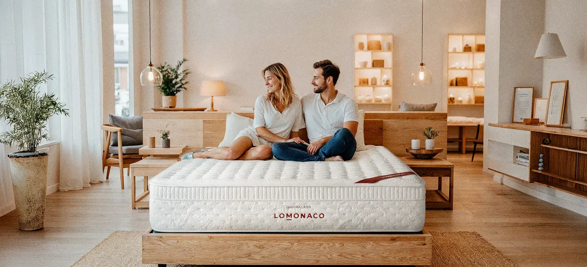
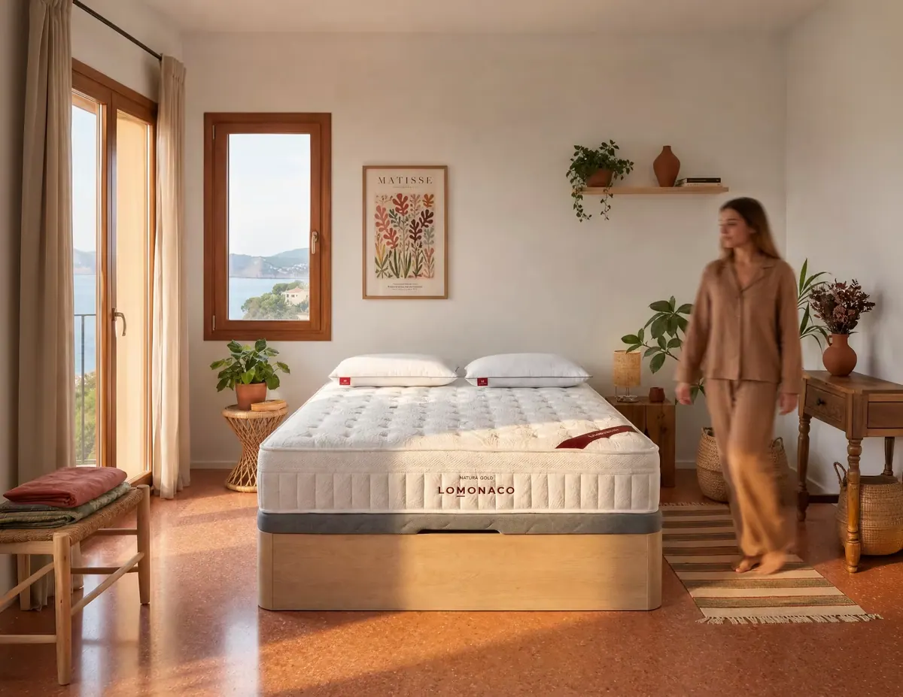
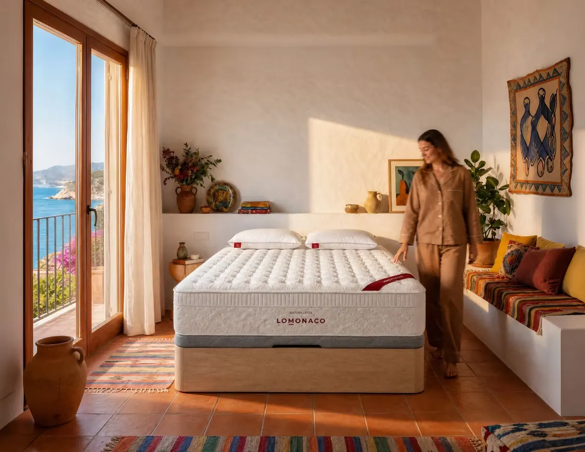
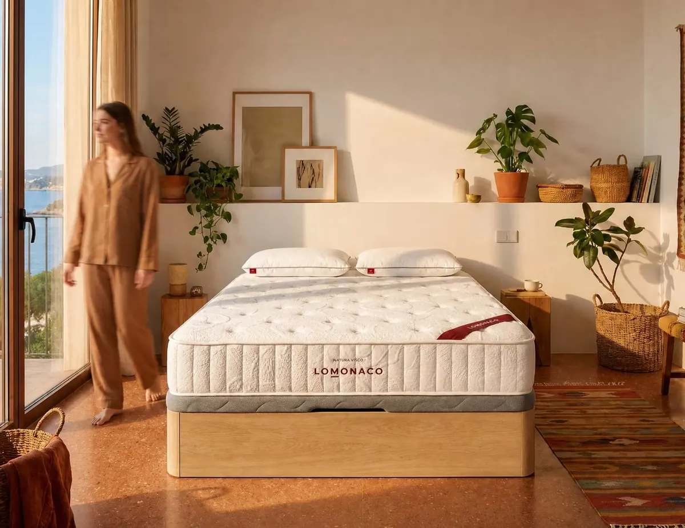
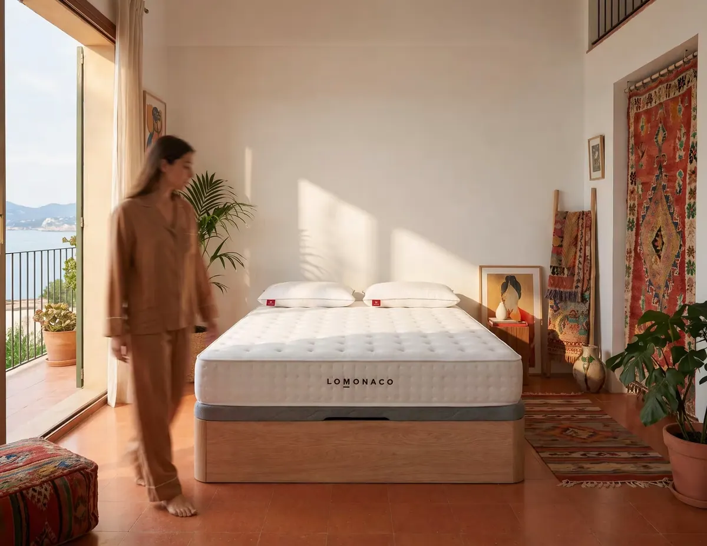

Colchón para parejas con pesos distintos: cómo acertar

Cuando uno pesa 55 kilos y el otro 95, el mismo colchón no se comporta igual en los dos lados de la cama. Es una de las dudas que más nos plantean las parejas al teléfono. En esta guía te explicamos qué tipo de colchón funciona mejor, qué firmeza elegir, qué medida necesitáis y qué hacer si la diferencia de peso es muy grande, con los datos reales de nuestros colchones.
Respuesta rápida
Para una pareja con pesos muy distintos, lo que mejor funciona es un colchón de muelles ensacados con capas de confort viscoelásticas o de látex:
- Núcleo: muelles ensacados, que trabajan uno a uno y dan independencia de lechos.
- Firmeza: media-firme, elegida pensando en la persona de más peso.
- Medida: 150 cm de ancho como mínimo; 160 o 180 cm si os movéis mucho.
- Si os lleváis más de 30 kg o queréis firmezas opuestas: dos colchones de 90×200 sobre una misma base de 180×200.
¿Por qué los pesos distintos afectan al colchón?
Porque cada cuerpo hunde el colchón de forma diferente. La persona de más peso crea una zona más baja y la otra tiende a deslizarse hacia ella. Además, sus movimientos se notan más en el otro lado y el mismo colchón le parece blando a uno y duro al otro.
En la práctica, una pareja con mucha diferencia de peso suele encontrarse con estos cuatro problemas:
- Efecto hamacaEl lado de la persona de más peso se hunde más y el colchón forma una pendiente hacia el centro. La persona ligera duerme “cuesta abajo” y acaba rodando hacia su pareja.
- Movimientos que despiertanCuando la persona de más peso se gira o se levanta, desplaza más masa y el movimiento llega con más fuerza al otro lado.
- Firmeza que no convence a ningunoUn colchón medio puede quedarse blando para quien pesa 95 kg y resultar duro para quien pesa 55 kg.
- Calor desigualQuien más pesa se hunde más en las capas de espuma y tiene más superficie de contacto, así que suele notar más calor.
La buena noticia es que todos tienen solución si elegís bien el tipo de núcleo, la firmeza y la medida. Vamos por partes.
¿Qué es la independencia de lechos y por qué importa?
La independencia de lechos es la capacidad del colchón para que los movimientos de una persona no se transmitan a la otra. Depende sobre todo del núcleo: los muelles ensacados, que trabajan cada uno por separado, son los que mejor la consiguen junto con las espumas viscoelásticas.
Dormir en pareja tiene ventajas reales. En un estudio de laboratorio del sueño con parejas, publicado en Frontiers in Psychiatry en 2020, los participantes tuvieron más sueño REM y menos interrumpido cuando dormían juntos que cuando dormían solos. Pero los investigadores también registraron más movimientos de piernas al compartir cama. Un buen colchón para parejas es el que conserva lo primero y amortigua lo segundo.
- 12parejas participaron en el estudio de sueño compartido
- 4noches de registro en laboratorio, juntos y por separado
- + REMmás sueño REM y menos interrumpido al dormir en pareja
En un colchón de muelles ensacados, cada muelle va metido en su propia bolsa de tela y no está unido a los de al lado. Por eso cede solo donde hay peso: bajo la persona de 95 kg se comprimen más muelles y más a fondo, y bajo la de 55 kg el colchón sigue manteniendo su forma. Los colchones de muelles tradicionales, en cambio, unen todos los muelles con alambre y transmiten el movimiento de un lado a otro.
Consejo del Asesor del Descanso. Fijaos también en el borde. Un colchón con marco perimetral de refuerzo mantiene firme el contorno, así que podéis aprovechar todo el ancho sin sensación de caeros. En pareja, cada centímetro cuenta.
¿Muelles ensacados o viscoelástica para dormir en pareja?
Para pesos muy distintos, muelles ensacados. La viscoelástica absorbe muy bien el movimiento, pero en un núcleo de espuma la persona de más peso arrastra más superficie a su alrededor. Lo ideal es combinar ambos: núcleo de muelles ensacados con capas viscoelásticas o de látex encima.
| Para dormir en pareja | Muelles ensacados | Núcleo de espuma viscoelástica | Núcleo de látex |
|---|---|---|---|
| Independencia de lechos | Muy alta | Alta | Media-alta |
| Pesos muy distintos | Cada lado cede según su peso | Más riesgo de efecto hamaca | Bien si la firmeza es alta |
| Facilidad para girarse | Respuesta rápida | Recupera la forma más despacio | Muy elástico |
| Temperatura | El aire circula por el núcleo | Retiene más el calor | Fresco si es transpirable |
| Bordes | Firmes con marco perimetral | Ceden más | Ceden más |
Valoración orientativa de nuestros asesores según el tipo de núcleo. El resultado final depende también de las capas de confort y de la firmeza de cada modelo.
Un colchón viscoelástico es una gran opción para una pareja de pesos parecidos o para quien duerme solo y busca acogida. Un colchón de látex encaja con parejas que se mueven mucho y valoran la elasticidad. Pero cuando la diferencia de peso es grande, el núcleo de muelles ensacados es el que mejor reparte el trabajo entre los dos lados.
¿Qué firmeza elegir si pesáis distinto?
Elegid la firmeza pensando en la persona de más peso, normalmente media-firme. Si el colchón es demasiado blando para ella, se hundirá y arrastrará al otro hacia el centro. La persona más ligera encontrará la comodidad en las capas de confort superiores, que se adaptan a su cuerpo.
| Vuestros pesos | Firmeza recomendada | Qué priorizar |
|---|---|---|
| Los dos por debajo de 70 kg | Media | Adaptabilidad, para que el colchón no os resulte duro. |
| Uno de 55 a 70 kg y otro de 75 a 90 kg | Media-firme | Muelles ensacados con capa de confort adaptable. |
| Uno por debajo de 70 kg y otro por encima de 90 kg | Media-firme a firme | Muelles ensacados y marco perimetral. Valorad dos colchones. |
| Los dos por encima de 90 kg | Firme | Núcleo resistente que no se deforme con el uso. |
Rangos orientativos. La postura de cada uno también influye: de lado se necesita más adaptabilidad y boca abajo, más firmeza.
Si queréis afinar más, en nuestra guía sobre la firmeza de colchón según tu peso y tu postura tienes la tabla completa y lo que dicen los estudios sobre la firmeza media.
¿Qué medida de colchón necesita una pareja?
Un mínimo de 150 cm de ancho, que deja 75 cm por persona. El clásico de 135 cm deja solo 67,5 cm a cada uno, menos que una cama individual de 80. Si pesáis muy distinto o uno se mueve mucho, subid a 160 o 180 cm. Y si alguno mide más de 1,80 m, elegid 200 cm de largo.
- 67,5 cmpor persona en un colchón de 135 de ancho
- 75 cmpor persona en uno de 150, el mínimo que recomendamos
- 90 cmpor persona en uno de 180: lo mismo que una cama individual
| Medida | Ancho por persona | Para quién |
|---|---|---|
| Colchón 135×190 | 67,5 cm | Parejas de complexión menuda en dormitorios pequeños. Se queda justo con pesos muy distintos. |
| Colchón 140×200 | 70 cm | Parejas altas que no tienen sitio para más ancho. |
| Colchón 150×190 | 75 cm | El mínimo recomendable para dormir dos adultos con comodidad. |
| Colchón 150×200 | 75 cm | Lo mismo, si alguno de los dos mide más de 1,80 m. |
| Colchón 160×200 | 80 cm | Pesos distintos o uno que se mueve mucho por la noche. |
| Colchón 180×200 | 90 cm | Pesos muy distintos: cada uno tiene el ancho de una cama individual. |
| Colchón 200×200 | 100 cm | Máximo espacio, o si de vez en cuando se suma un niño o una mascota. |
Para el largo, suma entre 15 y 20 cm a la altura de la persona más alta. Hasta 1,75 m suele bastar con 190 cm.
Antes de decidir la medida, comprobad que cabe en el dormitorio con al menos 60 cm de paso a cada lado, y que tenéis base de esa misma medida. Si el colchón grande se os va de presupuesto, tenéis la opción de colchones financiados para pagarlo en cuotas.
¿Y si la diferencia de peso es muy grande?
Si os lleváis más de 30 kg o cada uno quiere una firmeza distinta, la solución más eficaz es poner dos colchones individuales de 90×200 sobre una base de 180×200. Cada uno duerme en su colchón, con su firmeza, y los movimientos del otro no le llegan.
Ventajas de dos colchones
- Cada uno elige su firmeza y su tipo de colchón
- Independencia de lechos total
- Sin efecto hamaca entre los dos lados
- Son más fáciles de manejar, girar y cambiar
Lo que hay que tener en cuenta
- Se nota una junta en el centro de la cama
- Necesitáis una base de una sola pieza de 180×200
- La ropa de cama debe ser de la medida total
- Los dos colchones deben tener la misma altura
Para montarlo, elegid dos unidades de colchón 90×200 y colocadlas sobre un canapé de 180×200, que además os da todo el espacio de almacenaje bajo la cama. Si elegís dos modelos diferentes, comprobad en la ficha que tienen la misma altura para que no quede escalón. Y proteged cada uno con un protector de colchón impermeable para que duren más.
Qué colchón LOMONACO elegir para dormir en pareja
Para la mayoría de parejas con pesos distintos, el Natura Gold: muelles ensacados con viscoelástica, firmeza media-firme y marco perimetral. Si buscáis más adaptabilidad y frescura, el Natura Látex, que combina látex y muelles ensacados. Los dos se fabrican en las 12 medidas de nuestro catálogo.
| Para parejas | Natura Gold Más vendido | Natura Látex | Natura Visco | Gran Natura |
|---|---|---|---|---|
| Núcleo | Muelles ensacados | Muelles ensacados | Espuma HR | 100% látex |
| Capas de confort | Viscoelástica y HR Confort | Látex, algodón y HR | Viscoelástica y HR Confort | HR Soporte |
| Marco perimetral de refuerzo | Sí | Sí | No | No |
| Firmeza (0 – 100) | 80 | 75 | 85 | 85 |
| Adaptabilidad (0 – 100) | 80 | 85 | 70 | 100 |
| Altura | 26 cm | 30 cm | 25 cm | 24 cm |
| Medidas disponibles | 12 | 12 | 12 | 11 (sin 140×200) |
| En pareja, ideal si | Pesáis distinto y buscáis equilibrio | Uno es ligero o duerme de lado | Pesos parecidos y elevados | Pesos parecidos y buscáis acogida |
Núcleo, capas, marco, firmeza, adaptabilidad, altura y medidas según la ficha técnica de cada modelo. Todos tienen 10 años de garantía.
Más vendido
Natura Gold
- Muelles ensacados y viscoelástica
- Marco perimetral de refuerzo
- Ideal para pesos distintos

Natura Látex
- Látex sobre muelles ensacados
- El más adaptable con muelles
- 30 cm de altura

Natura Visco
- Viscoelástica sobre núcleo HR
- Firmeza media-alta
- Para pesos parecidos

Gran Natura
- Núcleo 100% látex
- La máxima adaptabilidad
- 24 cm de altura
¿Cada uno quiere un colchón distinto? Os ayudamos a encontrar el punto medio
Contadle a un Asesor del Descanso el peso, la altura y la postura de cada uno, y os dirá qué colchón y qué medida encajan con los dos. Es gratis y sin compromiso.
Hablar con un asesorColchonesCómo elegir colchón en pareja en cinco pasos
- Apuntad vuestros datosPeso, altura y postura habitual de cada uno. Con eso se decide casi todo.
- Elegid el núcleoSi pesáis muy distinto, muelles ensacados. Si pesáis parecido, también os sirve un núcleo viscoelástico o de látex.
- Decidid la firmezaPensando en la persona de más peso. La más ligera encontrará la adaptación en las capas superiores.
- Calculad la medida150 cm de ancho como mínimo y 200 cm de largo si alguno mide más de 1,80 m.
- Probadlo con calmaDad al cuerpo unas semanas para adaptarse. En LOMONACO tenéis 14 noches de prueba para devolverlo si no os convence.
Y no olvidéis la almohada: cada uno debería tener la suya, adaptada a su postura y a la anchura de sus hombros. En nuestra sección de almohadas las tenéis en varias medidas, también en formato de una sola pieza para la cama completa.
Nuestra recomendación
Si en pareja tenéis pesos distintos, empezad por un colchón de muelles ensacados con viscoelástica, de firmeza media-firme, en 150 o 160 cm de ancho. Es la combinación que mejor funciona para más parejas. Si la diferencia supera los 30 kg o queréis firmezas opuestas, montad dos colchones de 90×200 sobre una base de 180×200. Y si vais a renovar también la base, un pack de colchón y canapé os sale más a cuenta.
Preguntas frecuentes sobre colchones para parejas
¿Qué colchón es mejor para una pareja con pesos muy distintos?
Un colchón de muelles ensacados con capas de confort viscoelásticas o de látex y firmeza media-firme. Los muelles ensacados trabajan de forma independiente, así que cada lado cede según el peso de quien duerme en él y los movimientos apenas pasan al otro lado.
¿Qué es mejor para dormir en pareja, muelles ensacados o viscoelástica?
Los dos dan buena independencia de lechos. Con pesos parecidos, la viscoelástica funciona muy bien. Con pesos muy distintos son mejores los muelles ensacados, porque evitan que la persona de más peso arrastre al otro hacia el centro. La opción más completa combina núcleo de muelles ensacados y capa viscoelástica.
¿Es suficiente un colchón de 135 para dos personas?
Para dos adultos se queda justo: deja 67,5 cm por persona, menos que una cama individual de 80 cm. Recomendamos un mínimo de 150 cm de ancho, y 160 o 180 cm si tenéis pesos muy distintos o uno de los dos se mueve mucho por la noche.
¿Se pueden poner dos colchones de 90 en una cama de matrimonio?
Sí. Dos colchones de 90×200 sobre una base o un canapé de 180×200 permiten que cada uno elija su firmeza y eliminan la transmisión de movimientos. Conviene que los dos tengan la misma altura y usar ropa de cama de la medida total.
¿Qué firmeza elegir si a uno le gusta duro y al otro blando?
Si la diferencia es pequeña, una firmeza media-firme con una capa superior adaptable suele poner de acuerdo a los dos. Si es grande, la mejor solución son dos colchones individuales, cada uno con la firmeza que prefiere su usuario, sobre una misma base.
Completa vuestra cama
Canapé abatible Base tapizada de tela Almohada viscoelástica Almohada de látex Edredón nórdico
¿Preferís que os lo expliquemos por teléfono?
Os atendemos personalmente y os ayudamos a elegir sin compromiso.
858 22 51 55Lunes a viernes de 9:00 a 18:00
Fuentes
- Drews HJ et al. «Bed-Sharing in Couples Is Associated With Increased and Stabilized REM Sleep and Sleep-Stage Synchronization». Frontiers in Psychiatry, 2020. Artículo
- Fichas técnicas de los colchones Natura Gold, Natura Látex, Natura Visco y Gran Natura de LOMONACO (consultadas el 17 de octubre de 2026).